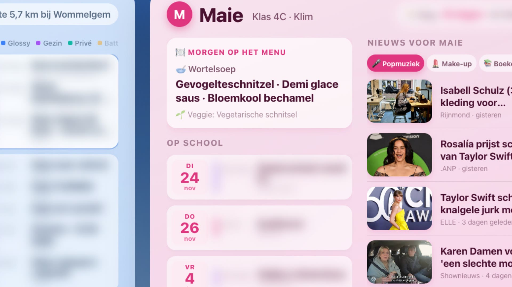

Vibe Coding · November 2026
Old Tech Isn't Useless
An old TV, an Apple TV from 2015 and a personal app my daughter helped design.
Old tech isn't useless. In our living room stands an old TV with an Apple TV HD from 2015. Too slow for the latest apps, too good to throw away. So we gave it a new job: a personal dashboard that is always on.
Thinking first, then building
We didn't start with code, but with a question: what do we actually want to see when we walk past in the morning? The answer was a screen split in two. The left half, in light blue, is mine. The right half, in light pink, belongs to my daughter.
We worked out the design in the browser first, as a prototype with the exact dimensions of the TV. Only when the look felt right did it become a real tvOS app, built with Claude Code.
What's on the screen
Along the top: a live view of the Ghent skyline, the weather, the clock and the forecast for the next five days.
My half shows news from VRT NWS and Sporza, international AI news, traffic on the Flemish motorways and my agenda. At the bottom, headlines from VRT NWS and De Tijd scroll by.
My daughter's half grew from her own ideas: the lunch menu at school, the activities for her class, a countdown to the next holiday and news about the topics she likes, from pop music to books.
Made for an old box
The Apple TV HD runs at 1080p, so the app does too. It keeps the screensaver off and shifts the image a few pixels every three minutes to prevent burn-in. With a free Apple ID, a home-made app only runs for seven days. A small script on the Mac solves that: it checks every four hours and reinstalls the app before it expires.
In the video, everything is public data except the agendas and the birthday. We blurred those.
Not an app for everyone
A device doesn't become worthless the moment it stops getting new apps. With a clear idea of what you want, you can build something that fits your life exactly. Not an app for everyone, but an app for us.
Curious what a custom tool could do for your team or your brand? A first intake is free.


